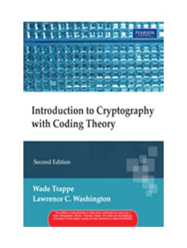
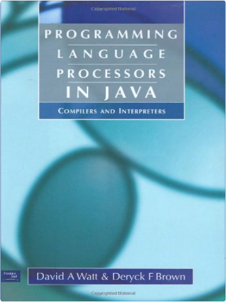
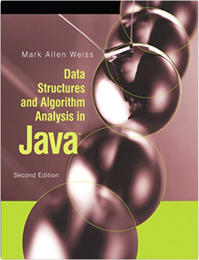
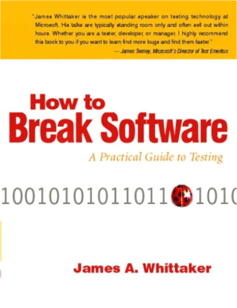
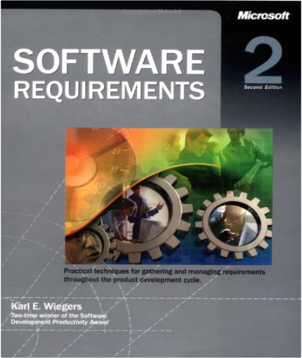

Version Control by ExampleEric Sink  This book uses practical examples to explain version control with both centralized and decentralized systems. Topics covered include: How to Write Articles for Newspapers and MagazinesDawn B. Sova A professional journalist shows students how to write hard-hitting news stories and attention-getting feature articles for newspapers and magazines. Computer Science: Operating Systems, Internals and Design Principals with How to Program. Custom Edition for University of Texas - Austin Course CS439Stallings Computer Networking with Internet Protocols and TechnologyWilliam Stallings This book provides professionals with a fresh and comprehensive survey of the entire field of computer networks and Internet technology—including an up-to-date report of leading-edge technologies. TCP/IP, network security, Internet protocols, integrated and differentiated services, TCP performance, congestion in data networks, network management, and more. For programmers, systems engineers, network designers, and others involved in the design of data communications and networking products; product marketing personnel; and data processing personnel who want up-to-date coverage of a broad survey of topics in networking, Internet technology and protocols, and standards. Calculus Early TranscendentalsStewart "Now in Hindi PUBLISHED FOR THE FIRST TIME IN THE WORLD! A Life-Changing Guide for Personal and Professional Greatness A life-changing guide for personal and professional greatness! The Mastery Manual is packed with real-world ideas and practices that will get you to world-class standards quickly. The book comprises 36 life-changing modules, each of which will help you take your business and your life to the next level. You deserve to live your life at epic levels, creating spectacular results each day. Leave frustrations forever behind and feel yourself operating at your best. The Mastery Manual will teach you to be inspired like the ultra-achievers, realize brave dreams and reconnect with the power that is within you to make you the master of your future. This potent book is your manual - start reading it today! Robin Sharma is one of the most widely read authors in the world today. His eleven #l international bestsellers have sold millions of copies in over 60 countries and 70 languages. A highly influential blogger and social media celebrity, Robin is also a much sought-after speaker."  Calculus, 6th EditionJames Stewart Calculus, 6th EditionJames Stewart Success in your calculus course starts here! James Stewart's CALCULUS texts are world-wide best-sellers for a reason: they are clear, accurate, and filled with relevant, real-world examples. With CALCULUS, Sixth Edition, Stewart conveys not only the utility of calculus to help you develop technical competence, but also gives you an appreciation for the intrinsic beauty of the subject. His patient examples and built-in learning aids will help you build your mathematical confidence and achieve your goals in the course! Introduction to Cryptography with Coding TheoryWade; Washington; Lawrence C. Trappe With its conversational tone and practical focus, this text mixes applied and theoretical aspects for a solid introduction to cryptography and security, including the latest significant advancements in the field. Assumes a minimal background. The level of math sophistication is equivalent to a course in linear algebra. Presents applications and protocols where cryptographic primitives are used in practice, such as SET and SSL. Provides a detailed explanation of AES, which has replaced Feistel-based ciphers (DES) as the standard block cipher algorithm. Includes expanded discussions of block ciphers, hash functions, and multicollisions, plus additional attacks on RSA to make readers aware of the strengths and shortcomings of this popular scheme. For engineers interested in learning more about cryptography. PHP 5 For DummiesJanet Valade Covers the latest major release of PHP, the most popular open source Web scripting language, in the friendly, easy-to-understand For Dummies stylePHP is installed on nearly nine million servers, and usage has grown at the rate of 6.5 percent per month for the past two yearsPHP is easy to learn, well suited for Web development, and can be embedded with HTML, making it a good choice for creating dynamic Web pages for e-commerce sites and other Web applications; a database-friendly language, it connects easily to Sybase, MySQL, mSQL, Oracle, and other databasesExplains how to acquire and install PHP, how PHP's features make it a useful scripting language, and how to use PHP for three of the most common applications: interactive Web sites, database storage, and common operating system tasks Programming Language Processors in Java: Compilers and InterpretersDavid Watt, Deryck Brown This book provides a gently paced introduction to techniques for implementing programming languages by means of compilers and interpreters, using the object-oriented programming language Java. The book aims to exemplify good software engineering principles at the same time as explaining the specific techniques needed to build compilers and interpreters. Data Structures and Algorithm Analysis in JavaMark A. Weiss In this text, readers are able to look at specific problems and see how careful implementations can reduce the time constraint for large amounts of data from several years to less than a second. This new edition contains all the enhancements of the new Java 5.0 code including detailed examples and an implementation of a large subset of the Java 5.0 Collections API. This text is for readers who want to learn good programming and algorithm analysis skills simultaneously so that they can develop such programs with the maximum amount of efficiency. Readers should have some knowledge of intermediate programming, including topics as object-based programming and recursion, and some background in discrete math. How to Break Software: A Practical Guide to Testing W/CDJames A. Whittaker How to Break Software is a departure from conventional testing in which testers prepare a written test plan and then use it as a script when testing the software. The testing techniques in this book are as flexible as conventional testing is rigid. And flexibility is needed in software projects in which requirements can change, bugs can become features and schedule pressures often force plans to be reassessed. Software testing is not such an exact science that one can determine what to test in advance and then execute the plan and be done with it. Instead of a plan, intelligence, insight, experience and a "nose for where the bugs are hiding" should guide testers. This book helps testers develop this insight. The techniques presented in this book not only allow testers to go off-script, they encourage them to do so. Don't blindly follow a document that may be out of date and that was written before the product was even testable. Instead, use your head! Open your eyes! Think a little, test a little and then think a little more. This book does teach planning, but in an "on- the-fly while you are testing" way. It also encourages automation with many repetitive and complex tasks that require good tools (one such tool is shipped with this book on the companion CD). However, tools are never used as a replacement for intelligence. Testers do the thinking and use tools to collect data and help them explore applications more efficiently and effectively. Software Requirements 2Karl Wiegers Without formal, verifiable software requirements—and an effective system for managing them—the programs that developers think they’ve agreed to build often will not be the same products their customers are expecting. In SOFTWARE REQUIREMENTS, Second Edition, requirements engineering authority Karl Wiegers amplifies the best practices presented in his original award-winning text?now a mainstay for anyone participating in the software development process. |
 Made with Delicious Library
Made with Delicious Library